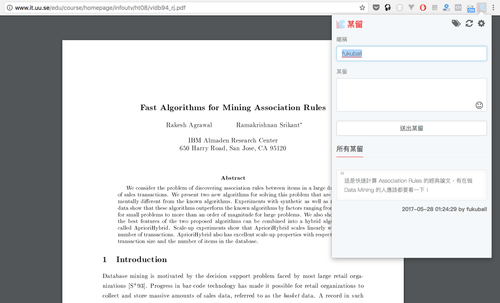

Hello World
CodeTengu Weekly 碼天狗週刊
CodeTengu Weekly 會在 GMT+8 時區的每個禮拜一 AM 10:00 出刊，每期會由三位不同的 curator 負責當期的內容，每個 curator 有各自擅長的領域，如果你在這一期沒有看到自已感興趣的東西，可能下一期就會有了。你也可以瀏覽一下前幾期的內容。
目前的 curator 陣容：
- @vinta - I failed the Turing Test - 科幻迷，最近在讀 Singularity Sky
- @saiday - Imnotyourson - 教召完領了 3500，得了毛囊炎
- @tzangms - Oceanic / 人生海海 - 衝動型購物
- @fukuball - ImFukuball - 有新工作了，但歡迎直接挖角
- @mingderwang - Ethereum enthusiast
- @kako0507 - 熱愛嘗試新事物的前端工程師
- @chiahsien - 人生就是不斷地填坑
- @hiroshiyui - 歧路亡羊與中年危機的典範
- @uranusjr - Smaller Things - PyCon Taiwan 2017 倒數 4 天
- @kkdai - 態度萬歲 - 喜歡 Golang 的略懂工程師，最近在學機器學習 (疑?)
- @yhsiang
- @johnlinvc - 在 KSP 內登陸月球中
你也可以關注我們的 Facebook、Twitter、GitHub（Open Source 專案）或微博，有很多 Weekly 看不到的內容。有任何建議或疑問也歡迎來 Gitter 聊聊。
 @fukuball
@fukuball
Diving Laravel
Laravel：中級
Laravel 核心開發人員 Mohamed 的 blog，主要內容是深入探討 Laravel 核心與筆記，對於了解 Laravel Framework 底層架構很有幫助！
Web App Performance Testing with Siege – Plan, Test, Learn
Performance Testing：初級
當你想了解一下你的網站的 Performance 時該怎麼做呢？本篇文章使用 Siege 做了一個簡單的示範，從一開始準備測試計畫，到最後的分析報告，加了 Cache 之後比較在 Transaction、Throughput、Concurrency、Response Time 改善了多少程度，而不是拿到工具就胡亂測一發，簡單明暸，同樣的道理也可以適用在其他測試工具上喔。
生成式对抗网络 GAN 有哪些最新的发展，可以实际应用到哪些场景中？
Machine Learning：中級
目前 Deep Learning 最紅的研究方向大概就是生成式對抗網路 GAN 了，這段討論串知乎上的神人們分享了各自的看法，探討 GAN 可以實際應用到哪些場景中。
其中有人岔題討論道：「科幻电影降临 (異星入境) 里面的外星人 “七肢怪” 所使用的语言跟人类不同，人类使用的是线性的、串行的语言，而 “七肢怪” 使用的是非线性的、并行的语言。“七肢怪” 在跟主角交流的时候，都是一次性同时给出所有的语义单元的，所以说它们其实是一些多层反卷积网络进化出来的人工智能生命吗？」看到這段覺得真有趣啊，這段腦補推論還蠻有道理的，沒想到學 Deep Learning 還可以增加看電影的樂趣！
如果大家對 GAN 還不甚了解，推薦大家看看微軟亞洲研究院到底什么是生成式对抗网络 GAN？這篇文章。
林軒田教授機器學習技法 Machine Learning Techniques 第 12 講學習筆記
Machine Learning：中級
經過了許多講的 Aggregation Model 之後林軒田老師的課程終於進入到了類神經網路的部份，這一講算是對類神經網路的一個最基礎的認識，其中 Backpropagation 是演算法核心關鍵，了解了這個算法就能知道類神經網路是如何優化的，如果大家覺得林軒田老師這邊講得不夠詳細的話，這邊再推薦李宏毅老師的講解。
Automated Machine Learning — A Paradigm Shift That Accelerates Data Scientist Productivity @ Airbnb
Machine Learning：中級
本篇文章分享了 Airbnb 如何在 Machine Learning 上做到自動化，包含資料前處理、參數調整、模型選擇等等，如果能夠自動化就可以幫助快速應用 Machine Learning 在產品上，其中有提到一個工具 auto-sklearn 我蠻有興趣的，使用這個套件做 Classification 跟 Regression 就不用自己調參數、選模型，他會自動透過訓練資料選出最好的參數跟模型（背後原理應該也是用 cross validation，只是把調參數跟模型的過程自動化了，不用自己慢慢調慢慢做實驗），感覺超棒的！
 @mingderwang
@mingderwang
Green Ruby 謝幕
整整 4 年，不曾間斷地每週出刊，整理與介紹 Ruby，JavaScript，UI，以及 DevOps 相關的文章給我們，在此感謝 Mose，Xenor 以及 Tysliu 無私的分享和努力。謝謝！
Kubernetes 與 Docker Swarm，還有 DC/OS，到底哪一個好？
當你需要大量部署 containers 時，挑選一個最適合貴公司或單位的 orchestration platform，一直都處於各說各話的狀態：有人說 Kubernetes 最棒，有人說 Docker Swarm 最好。其實，很難有一個標準答案。所以先看看這篇文章怎麼說，再動手試試看，看哪個你比較喜歡且容易上手， 最後再加上你專業的判斷，就是您最佳選擇。沒有人可以幫你做決定！
The RedMonk Programming Language Rankings: June 2017
最近又有人在 FB 問，給大一資訊系學生，最適合教他們什麼電腦語言，引起非常熱烈的討論。我們先看看這篇 RedMonk 2017 年 6 月的程式語言 rankings 報告，再下定論吧。
值得一提的是，Swift 跟 Kotlin 真的長得很像，一個是寫 iOS 手機 apps，另一種可以寫 Android 手機 apps。
React to async/await
我在學 React 的過程中，一直有個問題：就是怎麼把 React 跟 Promise 放在一起使用？這篇文章卻告訴我，用 ES7 的 async/await 會比用 Promise 的 .then 讓程式看起來簡潔很多,，大家可以試試看。
@hiroshiyui
7 Things You Should Know About WebAssembly
一篇 WebAssembly 的科普文、觀念導正文，很適合對 WebAssembly 還處於一知半解、懵懵懂懂的人一讀。
我自己是很期待 WebAssembly 假以時日可以在某種程度上解決「前端產品、技術，每隔 n 個月難度就翻一倍，或是根本就被推翻掉」這種問題，也希望 Web 能因為 WebAssembly 出現體驗更豐富的應用。
本期就為各位先帶來 WebAssembly 三連發。
Build Your First Thing With WebAssembly
實作文，作者嘗試將 asm.js 程式編譯（還是應該說組譯？）為 WebAssembly 程式的心得。
除了 asm.js 以外，還有 C/C++ 以及 Rust 也是 WebAssembly 目前支援的來源語言。我還蠻私心推薦各位也可以試試把 Rust 程式編譯為 WebAssembly 程式，Rust 自 1.14.0 版開始支援 wasm32-unknown-emscripten 這個 target。
WebAssembly cut Figma’s load time by 3x
Figma 分享了他們採用 WebAssembly 的心得，透過 WebAssembly 的輔助，讓他們的設計工具產品加速了不少載入時間。我實際註冊了一個帳號去使用，雖然無從驗證是否確實有三倍速的載入時間表現，但確實很驚豔這個設計工具產品的 UI/UX。
這篇透露了他們打造這個設計工作產品的技術面資訊，同樣值得一讀。
APIs Design - Creation - Management
一份介紹如何打造與管理 RESTful API 服務的懶人包級投影片，一樣是我最近在學習刻 API 的時候找到的好物，各個環節都講到了，真的很棒，推薦給大家。
You Are Not Google 你不必是 Google，你就是你
一篇痛擊 Over-Engineering 病（先承認我就是患者之一）的好文。
我們這種人看到業界大手像是 Google 還是 Amazon 又提出了什麼特殊架構、以及對應這種架構釋出的工具時，往往就一頭熱地想著「有為者亦若是」、「從此我這小蝦米也可以有核彈級的武器跟大鯨魚一搏」，然後把心力與精力花在套這些架構、工具，卻因此失焦，忘了自己產品與訴求的用戶，也許根本不適合用這些架構與工具，同時也可能忽視了，業界大手發展出這些架構與工具，是要解決他們極為特殊的需求。
這並不是說「地方的小工廠難道就不能作夢？」（←《下町火箭》哏）比誰大誰小的問題，而是你的產品想解決的問題需求，那些你覺得「不潮不夯」、但是經過千錘百鍊的「老」工具、「老」架構，搞不好更適合，綜合各項成本也更經濟。
業界大手有他們要解決的問題需求，你有你要解決的問題需求。你不必是 Google，你就是你。
作者提出的 UNPHAT 自我檢核法，各位 Over-Engineering 病友不妨拿來逐項審視自己，以及自己的產品，是否真有必要追著這些業界大手的腳步跑？還是說，其實你有自己的路可走？
Random Cool Stuff

LinkComment 某留
我自己最近在研究 Machine Learning 及 Deep Learning，免不了要看論文，相關論文其實網路上都找得到 PDF 檔，但一個人看總有些看不明白的地方，也想要有人一起討論，這樣就能夠更快了解論文的精髓。
後來想說既然論文 PDF 都在網路上了，不知有沒有方法可以讓大家在這篇在網路上的論文 PDF 進行留言討論，於是就做了一個 Chrome Extension 工具：LinkComment 某留。
裝了這個 plugin 就可以讓大家在任何網頁或 PDF 上進行留言討論了，只要是 Chrome 可以瀏覽的，就可以留言，這樣大家對於論文的見解與知識就可以累積下來，不僅讓自己可以更快地與人討論理解論文也能造福後人！希望有在看論文的研究者都可以來使用看看，大家一起看論文比較快！
PS. 大家如果想要用某留在 CodeTengu Weekly 討論（幹譙）誰分享的文章其實也可以啦～ 👻
由 @fukuball 分享。